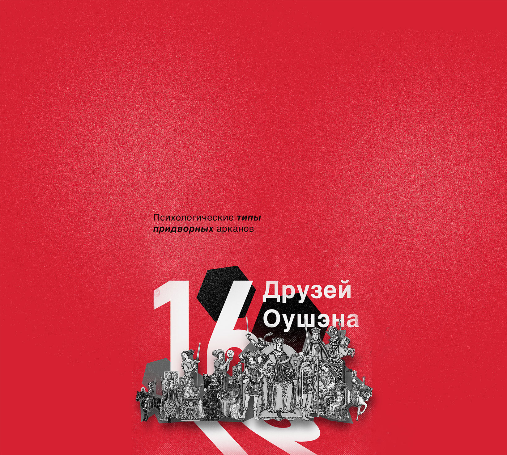
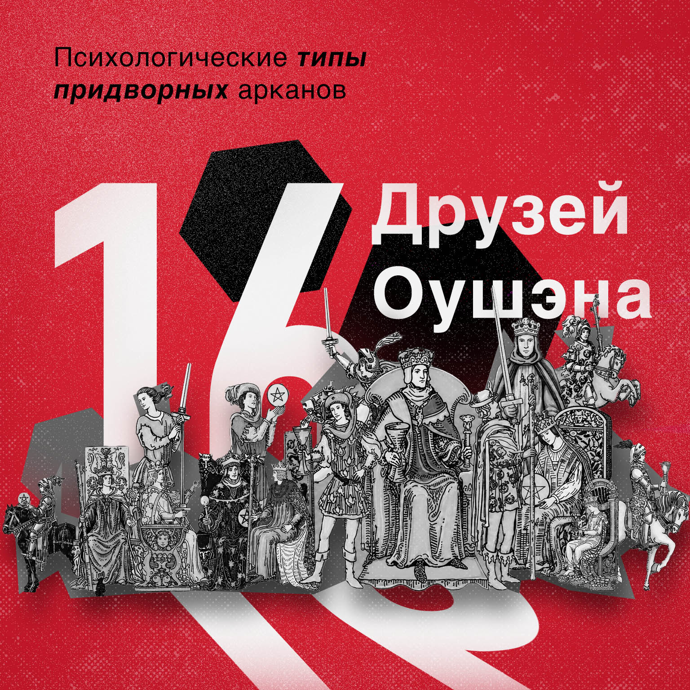
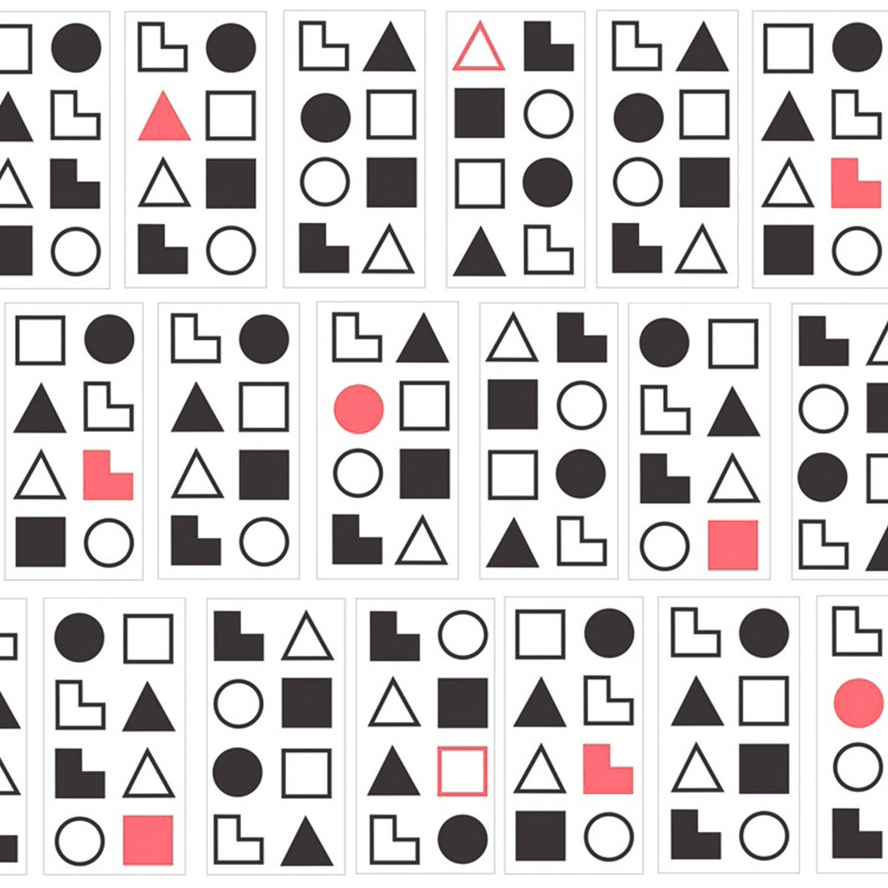
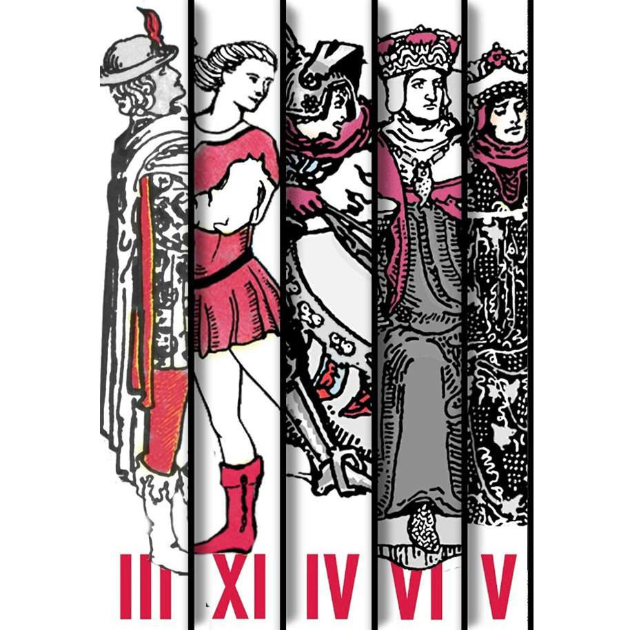
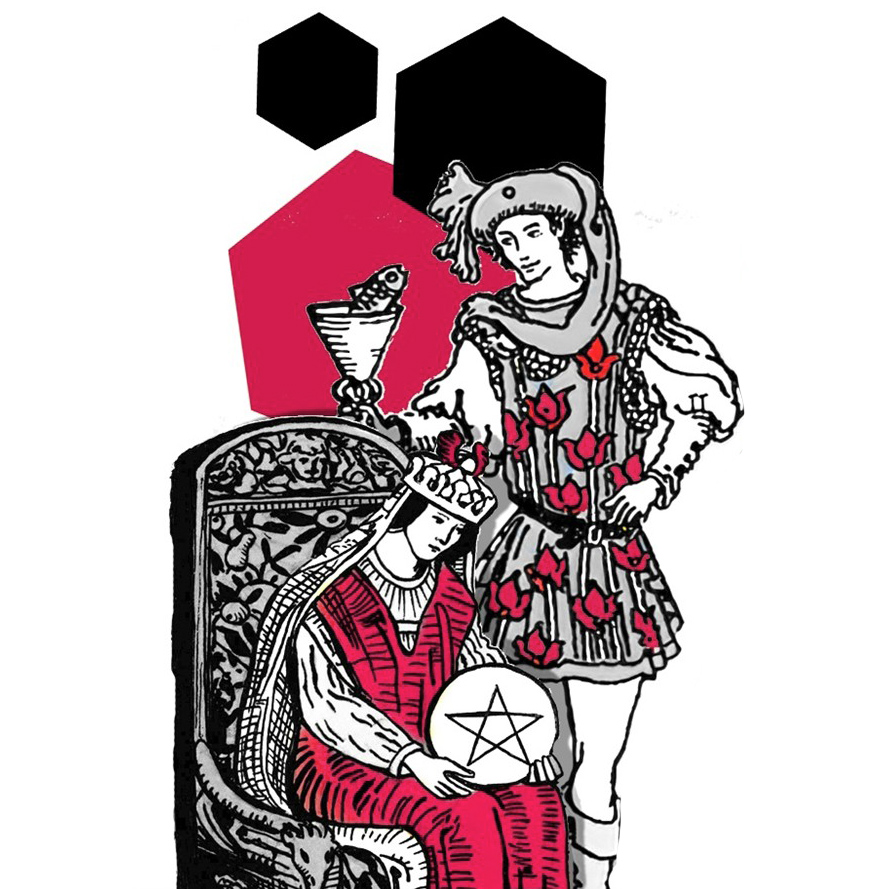
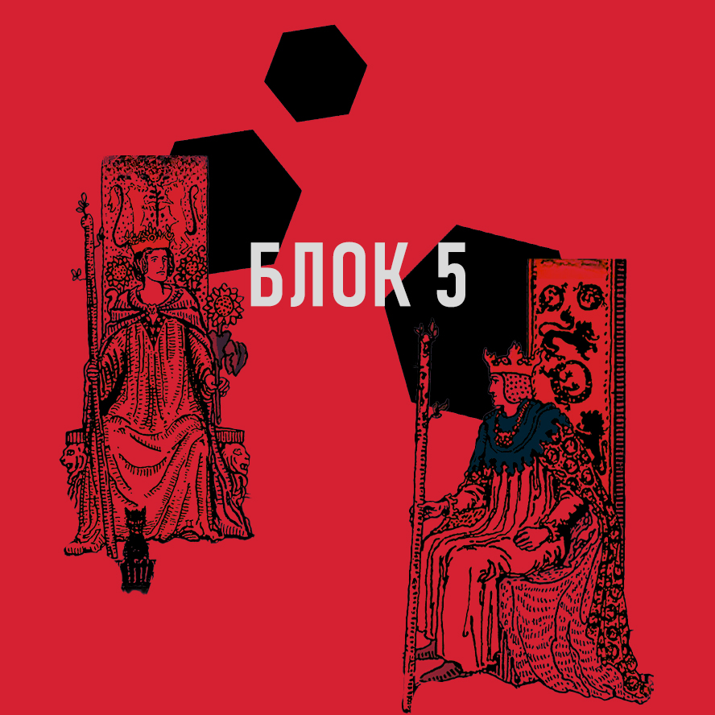
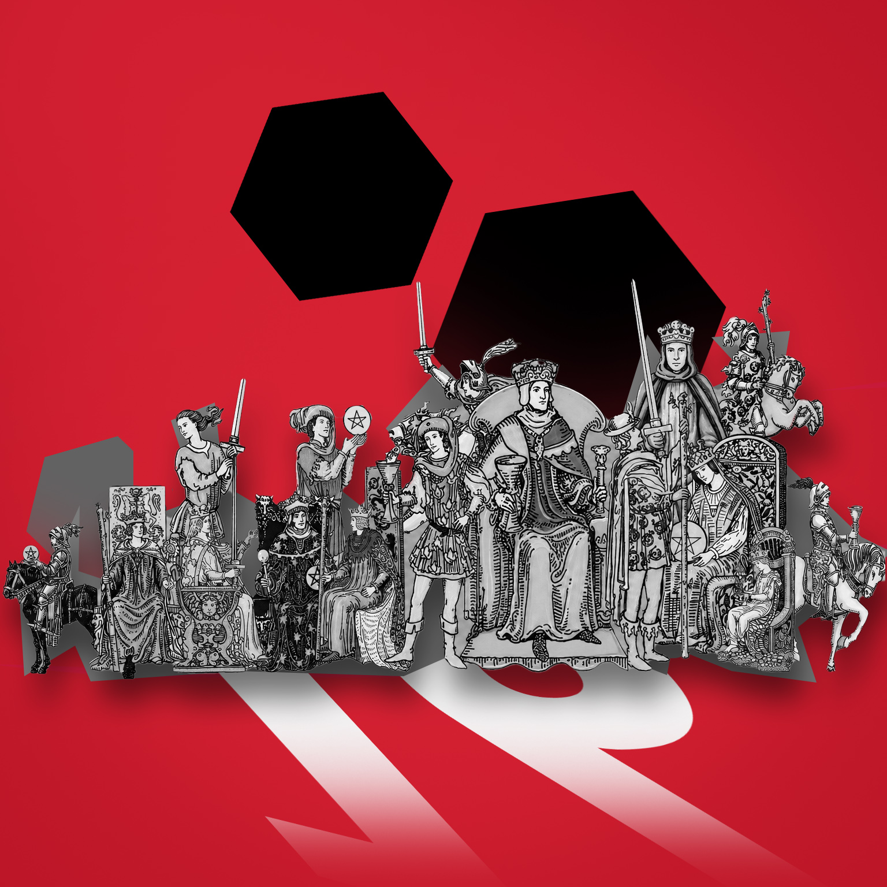

Возникали ли у Вас когда-либо трудности с чтением Придворных арканов Таро?
Приходилось ли тяжело вздыхать, когда они появлялись в раскладе?
А может быть, Вы - совсем новичок и не понимаете, чем значительно отличается Рыцарь Кубков от Пажа, а от информации в Интернете голова кругом?
На самом деле все просто, ведь Придворные арканы живут среди нас!
Возможно, когда Вы ломаете голову над особенностями чтения Короля Мечей – этот Король Мечей сидит рядом с Вами за соседним столиком. И зная, каким образом он понимает мир и воспринимает информацию – можно легко прочесть эту карту на любой вопрос, даже если он не подразумевает человека в ответе.
Главное – получить достойное сокровище, на которое эти 16 друзей легко позарятся и станут Вашими друзьями. Это сокровище – система соционических типов. И я готова рассказать ее вам и выдать досье на каждого из 16 друзей Королевского двора Таро. Готовы ли Вы завладеть этими секретными знаниями?
Тогда приглашаю Вас в психологический курс-исследование «16 друзей Оушэна: психологические типы Придворных арканов Таро»!
Про что этот курс?

Я создала этот курс для того, чтобы его участники - и вы в том числе! - смогли:
Систематизировать знания по придворным арканам
Создать психологический портрет каждого из 16 Придворных арканов
Понять особенности «взаимоотношений» между ними
Читать придворные карты на любых позициях в раскладе
И это еще не все:) Курс поможет вам не только глубже понимать арканы и лучше читать расклады, но и пригодится в реальной жизни! Все полученные знания и навыки можно применять во взаимоотношениях с людьми в реальной жизни, понимая специфику, сильные и слабые стороны его соционического типа.
Для кого этот курс?
Курс рассчитан именно для тебя, если ты:
Новичок,
с небольшими представлениями о придворных картах и сочувствующих и хочешь сразу разобраться, не тратя время на байки с форумов
Продолжающий,
который испытывает затруднения с чтением придворных карт в раскладах, не уверен, какой полюс значения применить, и хочешь получить отличную практическую систему
Таролог,
который не испытывает затруднения с трактовкой, но любит психологический подход к Таро и хочет преисполнится в своем сознании
Человек,
который очень любит различные типологии и хочет построить гармоничные отношения со своим окружением и без всяких картишек
Любитель,
исследовать себя и других, узнавать свои сильные стороны и уметь прикрывать слабости
Тот, кто любит мемы,
даже если вы карты в руках не держали. Вам понравится!
Кому курс не подойдет?
- — Новичковым новичкам, которые не имеют представления о структуре Таро;
- — Магистрам соционики, профессионалам в этой области знаний, поскольку основной упор курса сделан на придворные карты и отсутствуют узкоспециализированные дебрийные дебри соционики, от которых взрывается мозг, а базовые базы вы знаете.
Чему именно я научусь на курсе?
В качестве таролога:
- ⬣Сформируете цельный, понятный образ каждого Придворного аркана: психологический портрет, характер, сильные и слабые стороны, как этот персонаж ведет себя в разных ситуациях, и т.д.;
- ⬣Будете легко читать Придворные карты на любых позициях в раскладе: не только как описание конкретного человека, но и как характеристику ситуации, и как прогноз на будущее;
- ⬣Поймете, как взаимодействуют друг с другом Придворные карты: имея в голове четкую и понятную систему взаимоотношений между ними вы будете точно отслеживать противоречия в раскладе и видеть возможные проблемы и зоны роста клиента, о которых его сознание даже не подозревает;
- ⬣Сделаете свои консультации глубже и подробнее: ведь теперь у вас будут полные знания о придворных картах, их поведении и отношениях друг с другом;
- ⬣Начнете давать своим кверентам конкретные рекомендации в сфере отношений с другими людьми: зная Придворный аркан человека, вы подробно расскажете, как кверенту лучше себя вести с таким человеком, как найти к нему подход, что лучше говорить и что делать, а чего стоит избегать.
В своей личной жизни:
- ⬣Построите гармоничные отношения со своим окружением, ведь теперь будете знать о темах для беседы и видах взаимодействия, которых лучше избегать при общении с тем или иным человеком;
- ⬣Добьетесь успехов в карьере, ведь теперь будете знать, как и в какой сфере «преподнести себя обществу»;
- ⬣При необходимости найдете наиболее подходящего спутника жизни именно для вас ;)
Вы узнаете свои сильные и слабые стороны - и поймете:
- ⬣Как использовать их для успешного заработка на картишках и не только;
- ⬣С какими людьми удобнее работать именно вам;
- ⬣На чем можно простроить личный бренд и стать уникальным тарологом.
Вы поймете не только придворные карты, но и мотивацию поступков людей вокруг вас!
Это поможет вам избегать опрометчивых решений в отношениях, выстраивать выгодные стратегии поведения, легко и просто налаживать контакты с людьми без траты лишних нервных клеток!
Что же именно вас ждет на курсе, откуда берутся такие классные результаты? Читайте ниже!
Программа курса

- ⬣Подходы к чтению Придворных арканов, способы определения полюса чтения;
- ⬣История и подходы к психологическим типологиям людей. Типы Юнга, MBTI, Соционика;
- ⬣Коротко о методиках типирования;
- ⬣Дихотомии: оси логика/этика, экстраверсия/интроверсия, сенсорика/интуиция, рациональность/иррациональность;
- ⬣Типирование придворных карт по дихотомиям.
По результатам блока:
- 01понимаете, как и умеете быстро и безошибочно определять в каком из ключей читать придворную карту в раскладе;
- 02знаете отличительные особенности и историю возникновения основных психологических типологий, основные методики типирования и их ловушки;
- 03понимаете какие признаки характерны для каждой придворной карты, а главное из чего они следуют, видите нюансы, которые привносятся в каждый расклад, благодаря этим знаниям;
- 04получите первые знания, благодаря которым сможете выделить сильные стороны вас и кого-то из вашего окружения.

- ⬣Понятие «соционическая функция»;
- ⬣Анализ 8 соционических функций с практическими примерами;
- ⬣Понятие и анализ позиций Модели А.
По результатам блока:
- 01Понимаете особенности проявления признаков, характерных для придворных карт с точки зрения соционической теории;
- 02Видите как проявляются одинаковые с первого взгляда признаки у разных придворных карт;
- 03На примерах из раскладов видите отличия между белой и черной функцией;
- 04Знаете и понимаете структуру соционического типа придворных карт;
- 05Получите практические признаки, говорящие о силе/слабости каждой функции, по которым сможете уловить их проявления у вас или вашего окружения и поймете как это можно использовать для своих целей.

- ⬣Подробное описание каждой из 16 придворных карт по модели А;
- ⬣Практические примеры использования характеристик в «неодушевленных» вопросах (перспектива, деньги, проблемы).
По результатам блока:
- 01Имеете подробное «досье» на всех 16 друзей Оушэна;
- 02Знаете сильные и слабые стороны каждой придворной карты, зону их интересов, как они действуют в новых ситуациях, а в каких вопросах и темах легко внушаемы (и многое еще);
- 03Умеете применять характеристик типа придворных карт в вопросах «неодушевленного» типа (стадии развития ситуации);
- 04Узнаете больше о себе и своих знакомых, поймете почему у вас возникают провалы в каких-то сферах жизни и как их исправить;
- 05Будете обожать придворные карты в раскладах.

- ⬣Виды благоприятных интертимных отношений;
- ⬣Виды двойственных интертимных отношений;
- ⬣Виды неблагоприятных интертипных отношений.
По результатам блока:
- 01Четко понимаете в каких отношениях состоят придворные карты и как их совместное появление будут влиять на динамику и трактовку раскладов;
- 02Поймете одни из глубинных причин недопонимания с вашими друзьями/партнерами/родственниками и как можно сгладить «острые углы»;
- 03Получите ответ на долгожданный вопрос «КАКОЙ ПАРТНЕР МНЕ ПО СУДЬБЕ????» (с точки зрения соционики).

Особенностью этого блока является работа только на придворных арканах.
- ⬣Разборы 8 авторских раскладов для придворных карт;
- ⬣Урок с элементами психологии о несовпадении реального социотипа человека с раскладом. Причины. Понятие Персоны;
- ⬣Использование особенностей своего социотипа в формировании стратегии продвижения как таролога или иного помогающего специалиста.
А если я не буду успевать?
Закономерный вопрос летом, однако спешу вас заверить: курс обладает максимально удобным форматом для изучения!
Вас ждут 3-4 видеоурока в неделю, поэтому вам не нужно жертвовать своими повседневными делами и быть «как штык» на прямом эфире, а можно изучать материал в удобном месте в удобное время (даже под пальмой).
Вопросы можно будет задать в чате.
Форматы участия
3-4 видеоурока в неделю (в среднем 40 мин)
Не сложные, но интересные домашние задания в конце серии уроков
Конспекты каждого урока
Дополнительные материалы: литературные и видео-рекомендации
Сертификат об успешном окончании курса
Закрытая группа с вопросами, сплетнями и мемами
Неограниченный доступ к материалам курса
Стоимость и условия
Ну что, готовы ограбить банк с знаниями вместе с 16 Придворными друзьями Оушэна?
Бесплатные материалы по курсу
Соционические типы Придворных арканов Таро
YouTube